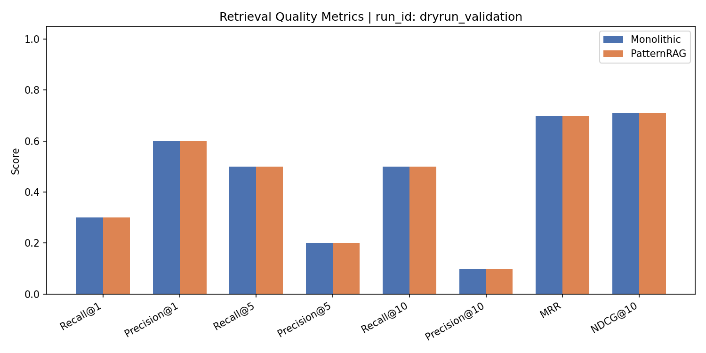
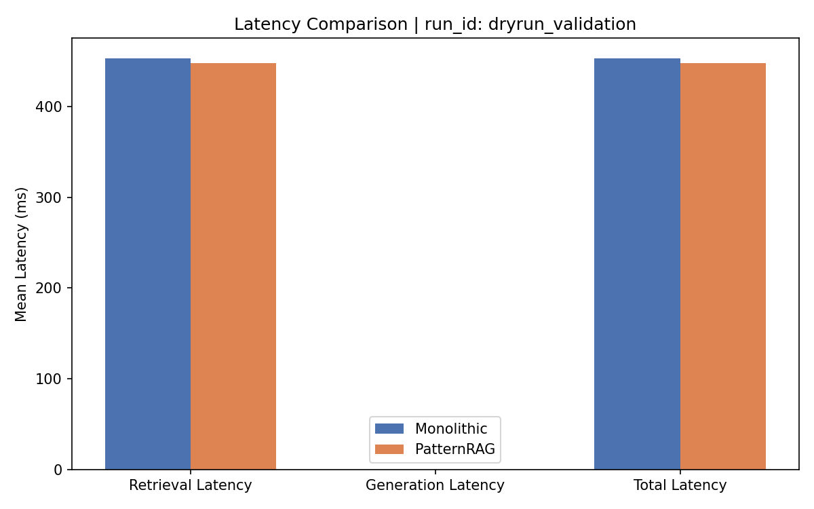

Key empirical findings from the 60-execution paired evaluation over HotpotQA.
PatternRAG replicated the retrieval behaviour of the Monolithic baseline with 100% equivalence across all 30 evaluated queries. Every query produced identical top-10 document IDs in the exact same rank order under Reciprocal Rank Fusion (RRF, k=60).
RAGAS evaluation using openai/gpt-oss-120b confirmed that decomposing the system into GoF patterns introduces no degradation in output quality: Faithfulness (0.4667 vs 0.4500) and Answer Relevancy (0.2777 vs 0.2517) slightly favoured PatternRAG, while Context Recall was identical (0.6333).
In three representative modification experiments (M1: TF-IDF Strategy, M2: Result Filter Decorator, M3: Complexity Observer), zero lines were altered in the core PatternRAG pipeline. In contrast, the monolithic system required intrusive modifications to its central execution class for every single change.
The evaluation successfully recovered from 46 transient HTTP 429 rate limit events using automated exponential backoff with 0 permanent failures across all 60 executions.
Comparison of ranking quality, recall, and precision across BM25 lexical + FAISS dense fusion.
| IR Metric | Monolithic Baseline | PatternRAG Strategy | Delta (%) | Visual Distribution |
|---|
Automated LLM-as-a-Judge evaluation using openai/gpt-oss-120b.
| Quality Metric | Monolithic | PatternRAG | Difference | Empirical Interpretation |
|---|
Runtime execution duration by stage and decoupled observer telemetry.
| Pipeline Stage | Statistic | Monolithic | PatternRAG | Variance (Δ) |
|---|
Metrics collected transparently via side-channel observers without polluting pipeline code.
Inspect all 30 evaluated HotpotQA queries with side-by-side answers, retrieved docs, and RAGAS scores.
How applying Strategy, Decorator, Observer, and Factory isolates change and prevents code rot.
Decouples search algorithms behind the RetrieverStrategy contract (retrieve(query, k)).
Transparently stacks non-functional concerns around retrievers without modifying retriever algorithms.
Decoupled side-channel monitoring via EventDispatcher without slowing or touching the pipeline.
Centralizes configuration-driven pipeline assembly from YAML at startup time.
Controlled modifications performed independently on both systems to evaluate change localization.
Frozen publication-ready charts generated directly from benchmark evaluation data.

